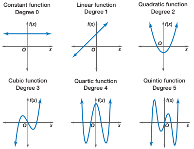

Polynomial Regression ▶️
MATH 4780 / MSSC 5780 Regression Analysis
Why Polynomial Regression
- Polynomials are widely used in situations where the response surface is curvilinear.
- Many complex nonlinear relationships can be adequately modeled by polynomials over reasonably small ranges of the \(x\)’s.

Example 7.1: Hardwood Data (LRA)
- Strength of kraft paper vs. the percentage of hardwood in the batch of pulp from which the paper was produced.
- A quadratic model may adequately describe the relationship between tensile strength and hardwood concentration.

U.S. Birth Rate from 1917 to 2003

R Lab Piecewise Polynomials: 3 knots at 1936, 60, 78

Any issue of piecewise polynomials?
Splines
Splines of degree \(k\) are piecewise polynomials of degree \(k\) with continuity in derivatives (smoothing) up to degree \(k-1\) at each knot.
- Use
bs()function in the splines package.

Practical Issue
-
How many knots should be used
- As few knots as possible
- At least 5 data points per segment
-
Where to place the knots
- No more than one extreme point per segment
- If possible, the extreme points should be centered in the segment
-
What is the degree of functions in each region
- Cubic spline is popular